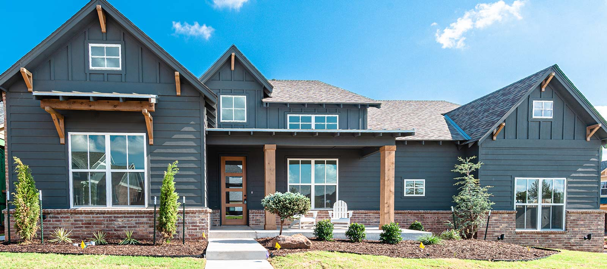

Report-first structure
The layout immediately separates Crown S from service-template competitors by behaving like a field document.
Crown S Home Inspections

Inspection Summary
This concept turns Crown S into a living inspection document. Instead of generic marketing sections, the visitor moves through the same logic an inspector would: overview, observations, focus areas, inspector note, and final recommendation.
Initial Findings
The layout immediately separates Crown S from service-template competitors by behaving like a field document.
The visitor sees how Rex thinks, not just what he sells.
Headers, labels, evidence panels, and conclusions all come from the actual service.
Observed Evidence

Inspector note
In this direction, the working photo is treated like evidence, not decoration. It anchors the site in reality and gives the page a documentary feel that normal contractor websites never achieve.
Scope Of Review
Grading, runoff behavior, and where moisture may be collecting.
Water almost always wins if the site is working against the house.
Surface wear, penetrations, ventilation clues, and visible aging patterns.
Upper-envelope issues can multiply into insulation, moisture, and structural problems.
Settlement signs, cracking patterns, and load-related concerns.
The difference between cosmetic and consequential matters to decisions and negotiation.
Visible HVAC, electrical, plumbing, and finish-condition indicators.
Performance issues shape both immediate repairs and future ownership cost.
Inspector Profile
Rex should feel like the person who walks a client through what matters, what can wait, and what changes the decision. That makes a report-based site a better fit than a glossy brochure layout.
The visual language here leaves room for confidence. Labels feel procedural. Copy feels plainspoken. The experience feels more like receiving judgment from a seasoned inspector than entering a marketing funnel.
Final Recommendation
Instead of another “premium small business site,” this concept gives Crown S a structure no one else nearby is likely using: a property review interface that turns the service itself into the design system.
Replace with Rex's real number, service area, and final inspection copy once the concept is approved.